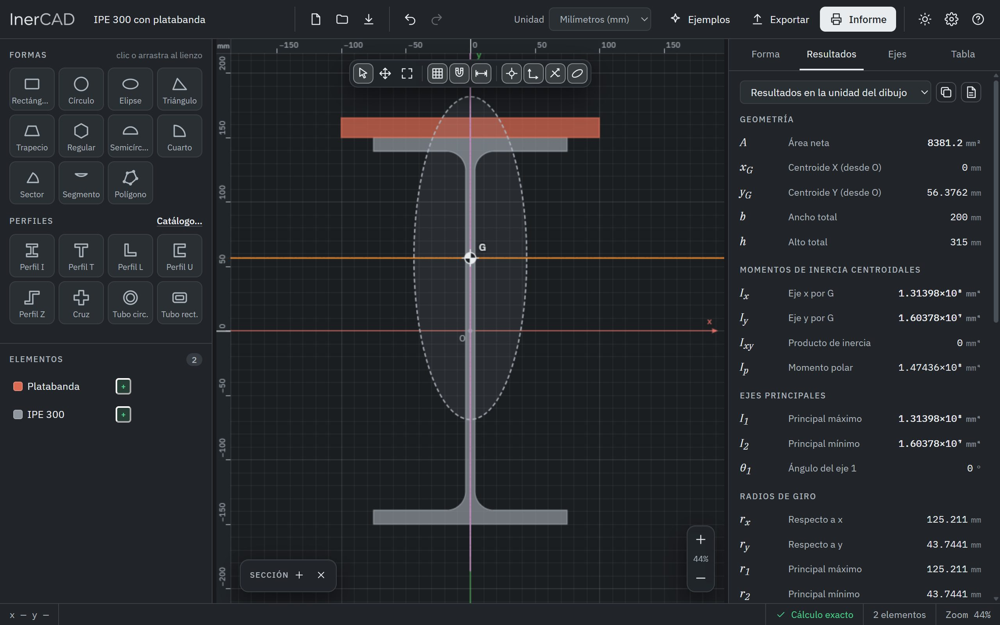
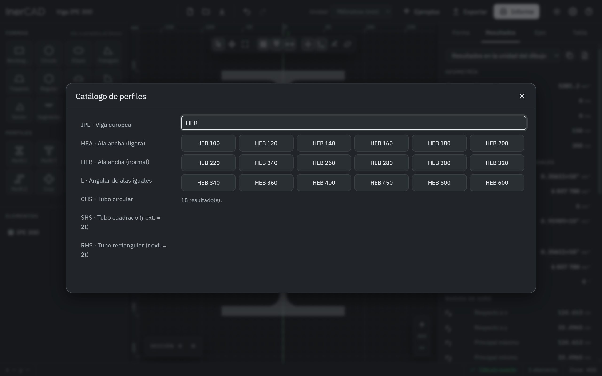
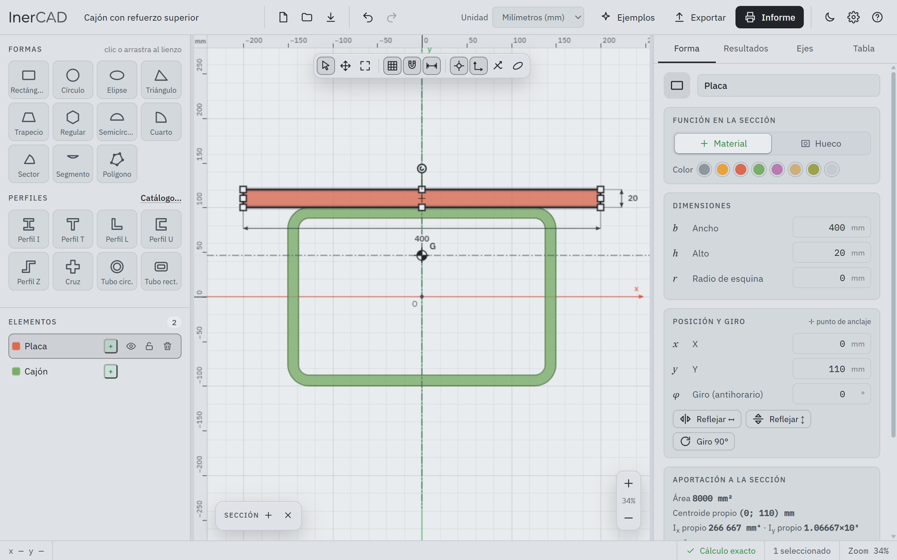
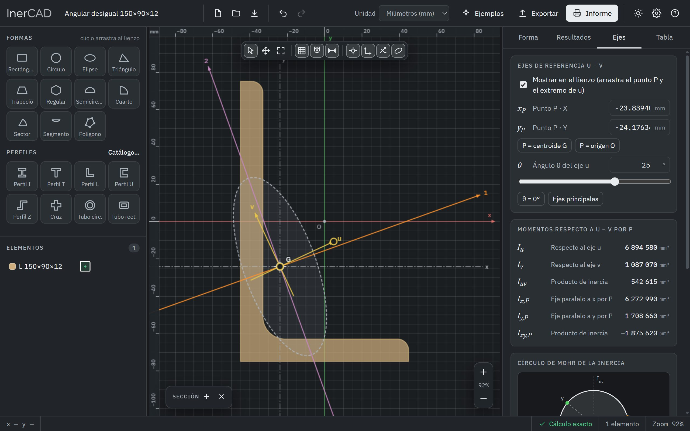
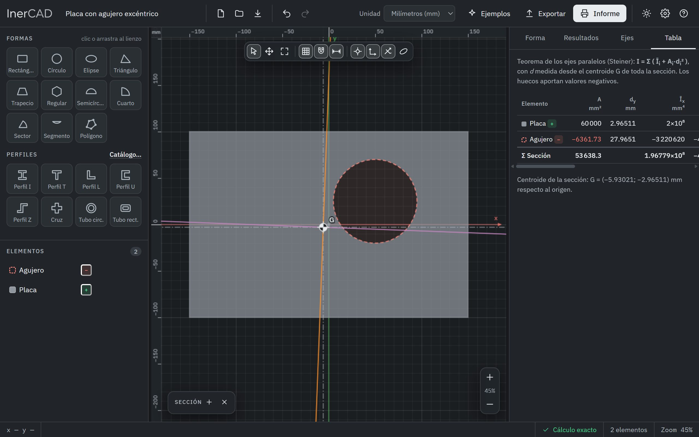
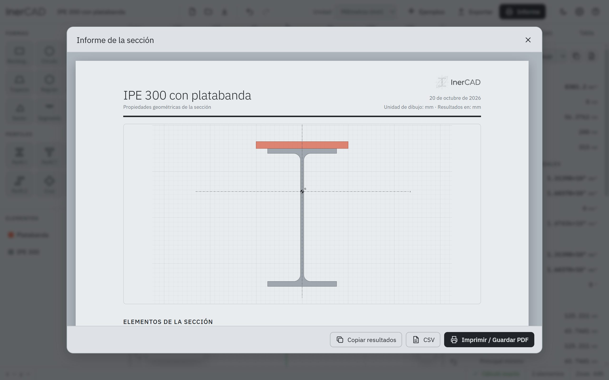

Guía de uso
Calcula una sección en cinco minutos.
InerCAD calcula las propiedades geométricas de cualquier sección plana a partir del contorno de sus formas. Esta guía recorre la pantalla, cómo construir y modificar una sección, y cómo interpretar y exportar los resultados.
Primeros pasos
La pantalla tiene tres zonas:
- Panel izquierdo: las formas y perfiles que puedes añadir, el acceso al catálogo y la lista de elementos de tu sección.
- Lienzo: donde dibujas. Tiene reglas, rejilla adaptable y, arriba, una barra con las herramientas y las superposiciones (centroide, ejes, elipse de inercia). El cuadro «Sección» muestra los resultados clave y se puede mover o minimizar.
- Panel derecho, con cuatro pestañas: Forma (propiedades de lo seleccionado), Resultados, Ejes (ejes de referencia y círculo de Mohr) y Tabla (cálculo de Steiner).

Construir la sección
Formas y perfiles
Haz clic en una forma del panel para añadirla, o arrástrala al lienzo. Hay once formas básicas (rectángulo con esquinas redondeadas, círculo, elipse, triángulo, trapecio, polígono regular, semicírculo, cuarto de círculo, sector, segmento y polígono libre) y ocho perfiles paramétricos: I/H, T, L, U, Z, cruz, tubo circular y tubo rectangular, con sus radios de acuerdo.
Catálogo normalizado
El botón Catálogo… abre una lista con IPE, HEA, HEB, angulares de alas iguales y tubos CHS, SHS y RHS. Se insertan como perfiles paramétricos con sus dimensiones nominales y acuerdos, así que puedes seguir editándolos.

Polígono libre
Pulsa P y haz clic para colocar vértices. Cierra el contorno haciendo clic en el primero, con Enter o con doble clic; Retroceso borra el último vértice y Esc cancela. Después puedes arrastrar los vértices, crear otros nuevos desde los puntos intermedios o editar sus coordenadas y radios de acuerdo en una tabla.
Huecos
En el panel Forma, la función Hueco convierte cualquier forma en un vaciado que se resta del material. Es la manera de modelar agujeros, cajeados o tubos a partir de formas simples.
Modificar la geometría
- Mover: arrastra la forma. El imán la alinea con la rejilla y con los bordes y centros de las demás (guías rosas). Alt lo desactiva y Mayús restringe el movimiento a un eje.
- Cambiar el tamaño: arrastra las asas cuadradas de los bordes; el borde opuesto se queda fijo. Las asas circulares ajustan espesores y ángulos.
- Girar: arrastra el círculo que hay sobre la forma (Mayús gira de 15° en 15°).
- Seleccionar varias: Mayús+clic, o arrastra una ventana en el vacío (de izquierda a derecha selecciona lo contenido; de derecha a izquierda, lo que se toque). Con varias formas puedes alinearlas, reflejarlas, duplicarlas o cambiar su función.
- Bloquear u ocultar elementos desde la lista. Ocultar un elemento lo excluye del cálculo, útil para comparar variantes.
- Deshacer y rehacer sin límite con Ctrl+Z y Ctrl+Y.
Valores exactos, con operaciones y unidades
Los campos numéricos del panel Forma aceptan expresiones y unidades. Con el dibujo en milímetros:
| Escribes | Resulta |
|---|---|
12*5 | 60 |
2.5cm + 4mm | 29 |
(3+4)/2 | 3,5 |
1,5m | 1500 |
Con las flechas ↑ ↓ ajustas el valor paso a paso (Mayús ×10, Alt ÷10). Las unidades de dibujo disponibles son mm, cm, m, in y ft, y los resultados pueden mostrarse en otra unidad distinta.

Leer los resultados
Los resultados se recalculan mientras arrastras. Todo se mide respecto a ejes por el centroide G, salvo lo marcado como «respecto al origen».
| Grupo | Qué contiene |
|---|---|
| Geometría | Área neta, centroide respecto al origen y dimensiones totales. |
| Momentos de inercia | Ix, Iy, producto de inercia Ixy y momento polar. |
| Ejes principales | I1 (máximo), I2 (mínimo) y el ángulo θ1 del eje respecto al que el momento es máximo, medido en sentido antihorario desde x. |
| Radios de giro | Respecto a x, a y y a los ejes principales. |
| Módulos elásticos | W para las cuatro fibras extremas (superior, inferior, izquierda, derecha). |
| Módulos plásticos | Zx, Zy respecto al eje neutro plástico (el que reparte el área en dos mitades iguales), su posición y el factor de forma α = Z/W. |
| Respecto al origen | Momentos respecto a los ejes x–y del lienzo, calculados con el teorema de Steiner. |
Ejes de referencia y círculo de Mohr
En la pestaña Ejes activa los ejes de referencia u–v: un punto P (por defecto el centroide) y un ángulo θ. Puedes moverlos arrastrando en el lienzo o escribiendo valores. InerCAD calcula Iu, Iv e Iuv y los dibuja en el círculo de Mohr; arrastrar el punto del círculo gira los ejes.
El botón Ejes principales coloca u sobre el eje principal 1. También puedes trasladar el origen del dibujo al centroide o a una esquina de la sección.

Tabla de Steiner y avisos
La pestaña Tabla aplica I = Σ ( Īi + Ai·di² ) elemento a elemento, con d medida desde el centroide de toda la sección. Los huecos aportan valores negativos, de modo que puedes comprobar el cálculo a mano.

InerCAD te avisa, marcándolo en rojo en el lienzo, cuando:
- dos formas de material se solapan (su zona común se contaría dos veces);
- un hueco sobresale del material (restaría un área que no existe);
- el contorno de un polígono se cruza consigo mismo.
Informe y exportación
| Salida | Para qué |
|---|---|
| Informe (PDF) | Dibujo, elementos, resultados, tabla de Steiner y formulación. En la versión de escritorio se guarda directamente como PDF. |
| CSV y portapapeles | Resultados en tabla para Excel; con la coma decimal si la eliges en los ajustes. |
| PNG y SVG | Imagen del dibujo o dibujo vectorial con arcos. |
| DXF | Contornos como polilíneas, con capas para el material, los huecos y el centroide, en las unidades del dibujo. |
Proyecto .inercad | Guardar y volver a abrir tu trabajo. También se autoguarda en tu equipo. |

Atajos de teclado
| Tecla | Acción |
|---|---|
| V · H · P | Seleccionar · mover la vista · dibujar polígono |
| Espacio + arrastrar | Desplazar la vista (también con el botón central del ratón) |
| Rueda del ratón | Acercar y alejar sobre el cursor |
| F · Mayús+F | Ajustar toda la sección · ajustar la selección |
| G · S | Rejilla · imán |
| Flechas | Mover la selección un paso de rejilla (Mayús ×10, Alt ÷10) |
| Supr | Eliminar la selección (o el vértice seleccionado de un polígono) |
| Ctrl+D · Ctrl+A | Duplicar · seleccionar todo |
| Ctrl+Z · Ctrl+Y | Deshacer · rehacer |
| Ctrl+S | Guardar el proyecto en un archivo |
| ? | Abrir la ayuda dentro de la aplicación |
Versión web y de escritorio
Las dos versiones son la misma aplicación. La de escritorio (Windows) se instala sin permisos de administrador, abre los archivos .inercad con doble clic y guarda el informe como PDF directamente. La web funciona en cualquier sistema y puede instalarse como aplicación desde el menú del navegador para usarla sin conexión.
Tu trabajo se guarda en tu propio equipo: InerCAD no envía proyectos a ningún servidor.
Alcance y límites
- No calcula la constante de torsión de Saint-Venant ni la de alabeo (sí el momento polar Ix + Iy).
- Si dos formas de material se solapan, la zona común se cuenta dos veces: es el método de áreas compuestas, y por eso se avisa.
- Los perfiles del catálogo se modelan con sus dimensiones nominales y acuerdos; pequeñas diferencias con las tablas son normales.
- Los resultados son orientativos: comprueba siempre los datos de partida antes de usarlos en un cálculo real.